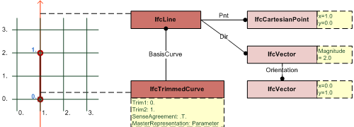

EXPRESS-G diagram
EXPRESS-G diagram| Ligne | |
| Linie |
The IfcLine is an unbounded line parameterized by an IfcCartesianPoint and an IfcVector. The magnitude of the IfcVector affects the parameterization of the line, but it does not bound the line.
NOTE A line segment is defined using either the IfcPolyline with two Points, or the IfcTrimmedCurve with BasisCurve being an IfcLine.
EXAMPLE Figure 320 illustrates an unbounded IfcLine and a bounded IfcTrimmedCurve. A bounded line starting at 0.,0. and ending at 0.,2. can be defined by:
- IfcLine with IfcVector.Magnitude: 2.0 AND IfcTrimmedCurve with Trim1: 0. and Trim2: 1. (and trimming preference being parameter);
- IfcLine with IfcVector.Magnitude: 1.0 AND IfcTrimmedCurve with Trim1: 0. and Trim2: 2. (and trimming preference being parameter);
- IfcLine AND IfcTrimmedCurve with Trim1::IfcCartesianPoint [0.,0.] and Trim2::IfcCartesianPoint [0.,2.] (and trimming preference being Cartesian) - the IfcVector.Magnitude has no effect;
- IfcPolyline with Points[1] being 0.,0. and Points[2] being 0.,2.
 |
|
Figure 320 — Unbounded IfcLine and bounded IfcTrimmedCurve |
NOTE Definition according to ISO/CD 10303-42:1992
A line is an unbounded curve with constant tangent direction. A line is defined by a point and a direction. The positive direction of the line is in the direction of the dir vector. The curve is parameterized as follows:P = Pntand the parametric range is: -∞ < u < ∞
V = Dir
λ(u) = P + uV
NOTE Entity adapted from line defined in ISO 10303-42
HISTORY New entity in IFC1.0
XSD Specification:
<xs:element name="IfcLine" type="ifc:IfcLine" substitutionGroup="ifc:IfcCurve" nillable="true"/>EXPRESS Specification:
| ENTITY IfcLine |
| SUBTYPE OF IfcCurve; |
|
| WHERE |
|
| END_ENTITY; |
Attribute Definitions:
| Pnt | : | The location of the IfcLine. |
| Dir | : | The direction of the IfcLine, the magnitude and units of Dir affect the parameterization of the line. |
Formal Propositions:
| SameDim | : | The dimensionality of the Pnt, provided by IfcCartesianPoint, shall be the same as the dimensionality of the Dir, provided by IfcVector. |
Inheritance Graph:
| ENTITY IfcLine |
| ENTITY IfcRepresentationItem |
| INVERSE |
|
| ENTITY IfcGeometricRepresentationItem |
| ENTITY IfcCurve |
| DERIVE |
|
| ENTITY IfcLine |
|
| END_ENTITY; |
 Link to this page
Link to this page